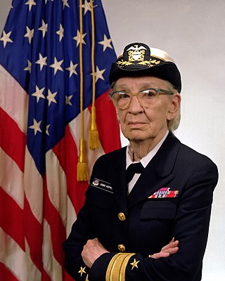

Rear Admiral Grace M. Hopper, 1984
 United States of America
United States of America United States Navy
United States Navy Rear admiral (lower half)
Rear admiral (lower half)Grace Brewster Murray Hopper (née Murray; December 9, 1906 – January 1, 1992) was an American computer scientist and United States Navyrear admiral.[1] One of the first programmers of the Harvard Mark I computer, she was a pioneer of computer programming who invented one of the first compiler related tools. She popularized the idea of machine-independent programming languages, which led to the development of COBOL, an early high-level programming language still in use today.
Hopper had attempted to enlist in the Navy during World War II, but she was rejected by the military because she was 34 years of age and too old to enlist. She instead joined the Navy Reserves. Hopper began her computing career when she worked on the Harvard Mark I team that was led by Howard H. Aiken. In 1949, she joined the Eckert–Mauchly Computer Corporation and was part of the development team that designed the UNIVAC I computer in 1944. It was at Eckert–Mauchly that she began developing the compiler. She believed that computer code could be written in English by using a programming language that was based on English words. The compiler would convert that code into machine code that would be understood by computers. By 1952, Hopper finished her compiler, which was written for the A-0 System programming language.[2][3][4][5]
In 1954, Eckert–Mauchly chose Hopper to lead their department for automatic programming, and she led the release of some of the first compiled languages like FLOW-MATIC. In 1959, she participated in the CODASYL consortium, which consulted Hopper to guide them in creating a machine-independent programming language. This led to the COBOL language, which was inspired by her idea of a language being based on English words. In 1966, she retired from the Naval Reserve, but in 1967, the Navy recalled her to active duty. She retired from the Navy in 1986 and found work as a consultant for the Digital Equipment Corporation, sharing her computing experiences.
Owing to her accomplishments and her naval rank, she was sometimes referred to as "Amazing Grace".[6][7] The U.S. Navy Arleigh Burke-class guided-missile destroyer USS Hopper was named for her, as was the Cray XE6 "Hopper" supercomputer at NERSC.[8] During her lifetime, Hopper was awarded 40 honorary degrees from universities across the world. A college at Yale University is named in her honor. In 1991, she received the National Medal of Technology. On November 22, 2016, she was posthumously awarded the Presidential Medal of Freedom by President Barack Obama.[9]
| Grace Murray Hopper | |
|---|---|
|

Rear Admiral Grace M. Hopper, 1984 |
|
| Nickname(s) | "Amazing Grace" |
| Born | December 9, 1906 New York City, New York, U.S. |
| Died | January 1, 1992 (aged 85) Arlington, Virginia, U.S. |
| Place of burial | Arlington National Cemetery |
| Allegiance | United States of America |
| Service/branch | United States Navy |
| Years of service | 1943–1966, 1967–1971, 1972–1986 |
| Rank | Rear admiral (lower half) |
| Awards | |